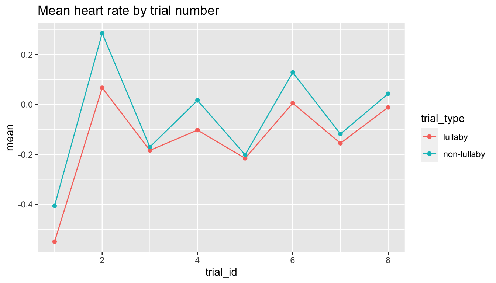

Lab 3 Answers
Princeton University
Lab 3
The data for this lab was taken from @bainbridge2020. The paper can be accessed here:
If you’re curious, you can explore all their raw data by going to the repository associated with the paper, here).
There are seven variables in the data and each variable is described below. The first six rows of the data frame are also displayed below.
| Data Columns |
|---|
|
Let’s start by trying to understand the structure of the dataset. Calculate the following:
- The age of the youngest (minimum) child in the dataset.
- The age of the oldest (maximum) child in the dataset.
- The total number of observations represented in the data.
- The age of the youngest (minimum) child in the dataset.
Create a data frame with only the first observation from the first trial for each participant. Uses this data frame to answer the following questions:
How many participants are present in the dataset?
How many 7-month-olds are there?
Arrange the dataframe from youngest to oldest. What’s the participant_id for the youngest infant?
Arrange the dataframe from oldest to youngest. What’s the participant_id for the oldest infant?
What is the mean number of observations per individual trial? (hint: you’ll need to use both
group_byandungroup).How many observations are there in the lullaby condition and the non-lullaby condition?
Next, let’s examine the dependent variable, heart rate. Create a new variable called
hr_roundthat is the heart rate value rounded to the nearest hundredth (use the functionround()).Plot a histogram of
hr_round. Be sure to add appropriate labels and a title to your plot. What distribution would you say this looks like?The histogram generated from the bb2021 data for the
hr_roundvariable appears to be fairly normal. For a more comprehensive view, let’s perform bootstrapping on this dataset 10,000 times and examine the resulting histogram.Firstly, extract only the
hr_roundvariable from the bb2021 data. Following this, use therep_sample_nfunction from the moderndive package (ensure it is installed) to bootstrap the dataset. If you are unfamiliar with this function, it allows for easy bootstrapping without the need to write loops. Set the function to randomly sample 100 rows (size = 100) and repeat this process 10,000 times (reps=10000). This will result in a large data frame.Upon completion, plot the histogram for all the bootstrapped values. How does it compare to the original?
Plot a density plot of
hr_round.Calculate the mean heart rate for each participant on each trial type. Save it to a new dataframe called
participant_means.Use
participant_meansto create a violin plot showing the distribution of heart rates in the lullaby and non-lullaby conditions. Your plot should be a simplified version of Figure 2a in the paper with (a) two violins, (b) each violin a different color, and (c) points showing the underlying data. Get rid of the legend.TipThe order that you add geoms to your plot matters here. It did not matter for simple class experiment.
Pick a theme for your figure. Also, add two different colors to it.
Now make a rain cloud plot of the figure. Look at vignette here for an idea how to create them using
geom_rain: https://www.njudd.com/raincloud-ggrain/Use
participant_meansand plot the data with a strip chart. Usestat_summaryto plot the mean for each condition.Tip- position = position_jittercontrols how far apart points are.Create the plot below showing the mean heart rate by condition across trials. Next, change the point size such that it corresponds to the number of trials represented.

Make a beautiful, clear plot that answers a question you might be interested in from the paper. Make sure to include a descriptive title and it is publication ready.